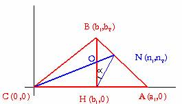

Solución del problema 71
Alicia y Maite Peña Alcaraz, alumnas del Colegio Porta Celi de Sevilla
Teorema de Blanchet:
En todo triángulo ABC de altura BH, al trazar las cevianas AM y CN concurrentes en BH, se establece que la altura será bisectriz del ángulo MHN.
Solución:

Si llamamos m a la pendiente:
Si m (HN) = t; para que BH sea la bisectriz de MHN, entonces m(HM) = -t.
Entonces, y
De lo que se deduce que la recta .
Como la recta entonces es fácil ver que
Y por el mismo camino, si y , también es fácil ver que
Sabemos ahora que M, O y A tienen que estar alineados para que se cumpla el enunciado; luego
Y teniendo en cuenta que N, B y A están alineados conseguimos:
y como con esto demostramos que M, O y A están alineados, entonces hemos demostrado que BH es la bisectriz de MHN cuando se cumplen las condiciones del enunciado.